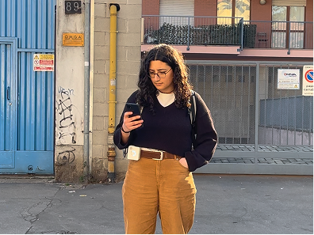
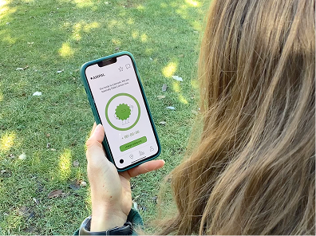
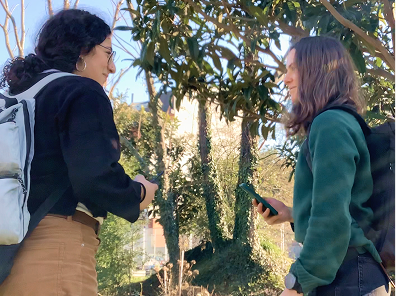
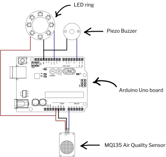
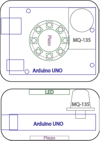
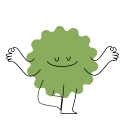
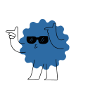
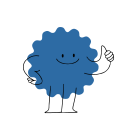
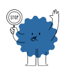
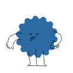

Overview
Air quality is invisible — and that's exactly the problem. Most people know pollution exists, but without being able to see or feel it in real time, it rarely changes behaviour. AirPal was our attempt to make it tangible, personal, and even a little playful.
AirPal is a physical companion device paired with a mobile app that visualizes your "health battery" against real-time air quality data. Time spent in polluted areas drains your PAL and makes it look sick; time in cleaner, greener spaces recharges it. The goal was to nudge small, healthier habits without guilt or shame — borrowing the emotional logic of a Tamagotchi to make self-care feel like a game.
This was a two-person project, so I was hands-on across every phase: concept development, UX/UI design in Figma, ProtoPie prototyping, and the Arduino hardware setup.
- Figma
- Arduino
- ProtoPie
- Illustrator
Concept
City life is stressful: polluted air, tight schedules, little time for self‑care. AirPal borrows from Tamagotchi‑like play — by taking care of your PAL, you also take care of yourself. Clear visuals (battery/face), small celebrations, and a social layer help make healthy choices stick.
How It Works

By being exposed to polluted air for more than one hour, one notch of the LED circle will power off. You can check your PAL's status through the app: if you lose battery it gets sick.

To recharge, you need to spend time where the air is clean. Every hour spent in nature will recharge one notch and your PAL will gradually feel better.

AirPAL allows you to join a network of people with whom you share the same interests. You can challenge your friends in the rankings.
Prototype
The hardware
To build our prototype we used an Arduino Uno board, the MQ135 Air Quality Sensor, a Piezo Buzzer and a LED ring. All sensors and actuators were connected to the Arduino board, which was connected to the laptop both as a power source, and to also connect to the software prototype (made in Protopie).

All of these elements were then positioned into a 3D printed case with holes to make the air quality sensor work properly and others to show the LEDs to the user.

Design
- Feedback: only positive nudges; celebrate achievements instead of shaming.
- Cute character: an interactive PAL to make the experience light and fun.
- Personalization: change PAL color and nickname.
- Gamification: simple ranking to encourage group activity in green areas.





Reflection
AirPal was the project where I most clearly felt the connection between design and wellbeing — the two things I care about most. Designing something that could genuinely shift a person's relationship with their environment, without lecturing them, was a design challenge I found deeply motivating.
The biggest lesson was about framing. Early versions of the concept leaned toward warning and data — showing people how bad the air was. User feedback quickly told us that felt anxious and discouraging. Shifting to a positive, celebratory model completely changed how people related to the device.
If I were to take this further, I'd explore integrating official AQI APIs for real city data, wearable form factors, and a more developed social layer.
Credits
Professors: Paolo Perego
Team: Alessandra Sgariglia & Erika Caffo